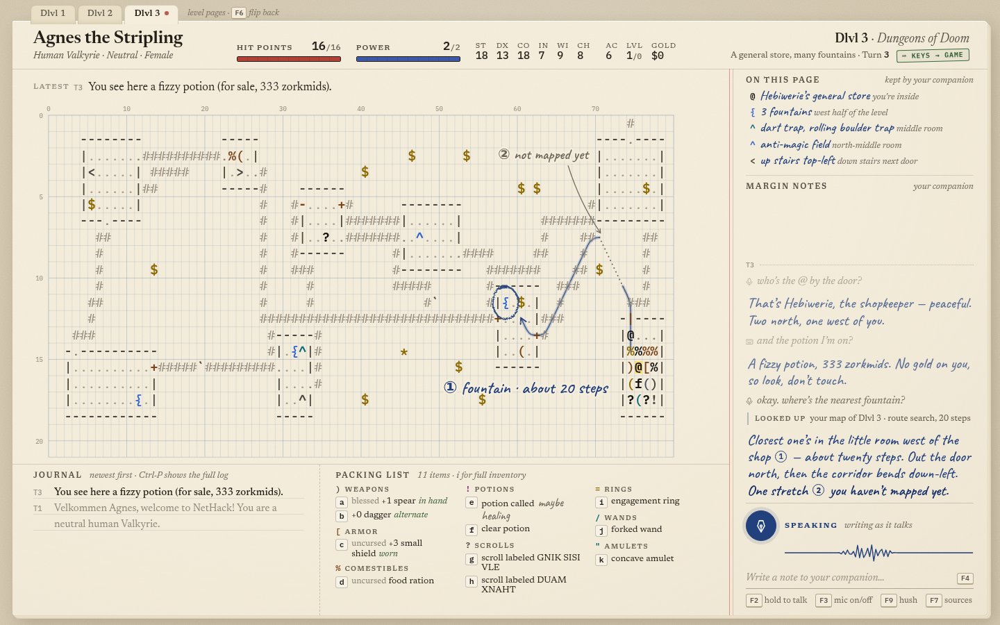
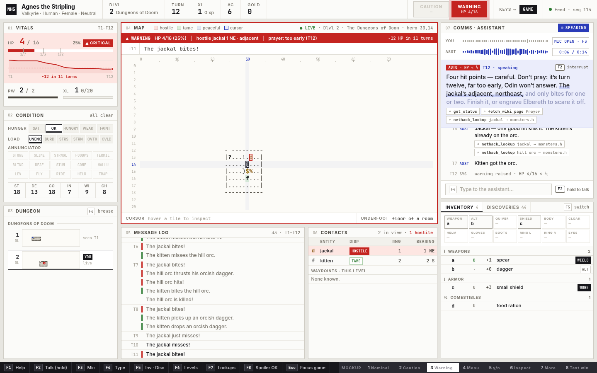
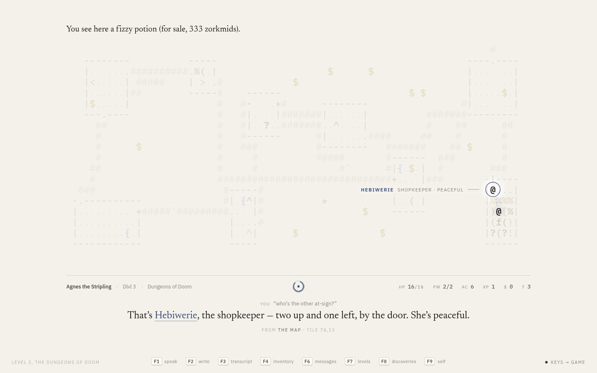
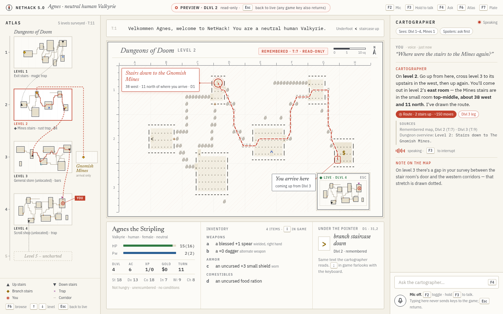
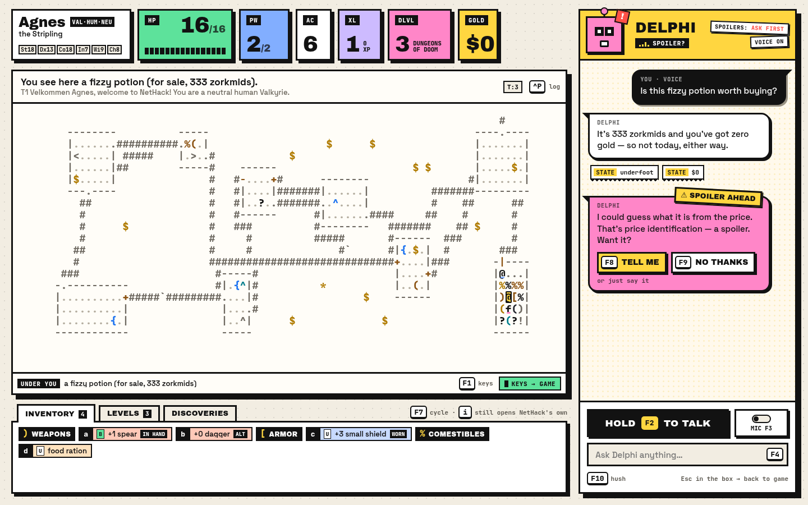

Clickable mockups built from real game states. Click a title to open the live mockup; switch states with its on-page buttons.

An adventurer's survey notebook: map on graph paper, the game "prints" in serif, you write in pencil, the companion writes in blue-black ink in the margin, circling tiles and drawing numbered routes. Journal entries, packing list, thumb-tab level pages. Voice state shown as a pen (capped / tracing / blotting / writing).
Weakness: little room below the map; large inventories scroll away.

Swiss instrument panel for power users: HP gauge with trend, hunger/load scales, condition annunciator, turn-stamped log, contacts table with range and bearing, inventory ledger with equipment grid, assistant as a comms channel with live captions and lookup chips. Colour only for meaning; alerts escalate caution → warning.
Weakness: the map gets only ~9px per column; dense, may feel like work.
States: nominalcautionwarningmenuy/ninspect--More--text window

Map set like a page in a fine book, nothing else on screen. A hairline status whisper with an ensō orb as the assistant; it speaks in film-style captions and spotlights tiles it mentions (the rest of the map dims). Inventory, transcript, levels etc. are calm F-key sheets. Ink = game asks, vermilion = danger, indigo = assistant.
Weakness: early-game maps look sparse — a small room in a sea of paper.
States: playspeakingdangerinventorymenuy/n--More--transcriptlevelstext input

The dungeon as an atlas you build: a permanent cross-section with a live thumbnail per visited level, linked by stair lines and branches. Open any level read-only (live inset stays visible). The assistant is the Cartographer: its directions become routes and callouts across levels, with sources like map notes. F7 shows the whole atlas as an exploded plate.
Weakness: three columns shrink the live map; thumbnails crowd in deep games.

A loud frame around a calm map: chunky stat blocks with hard shadows, condition stickers, class-tinted inventory tiles. The assistant is DELPHI, a geometric character with moods (listening, thinking, "SPOILER?", "HEADS-UP!") talking in comic bubbles, with receipt chips for lookups. Prompts become hazard-striped bars with big key-labelled buttons.
Weakness: with small early maps the loud frame dominates the game.
States: playspoilery/nmenulow HP--More--conditionstext + levels912801920